Charades · Hard · page 7/12 · all packs
Reject an image by adding its slug to public/charades/charades-hard/reject.txt (append ! to keep it word-only), then re-run node scripts/genimages.mjs.
1 2 3 4 5 6 7 8 9 10 11 12 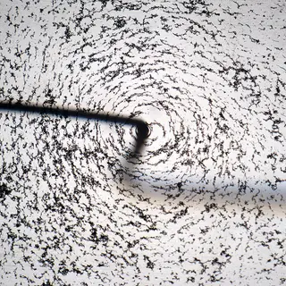
Magnetic field magnetic-fieldCC BY-SA 4.0 · Maciej J. Mrowinski · source 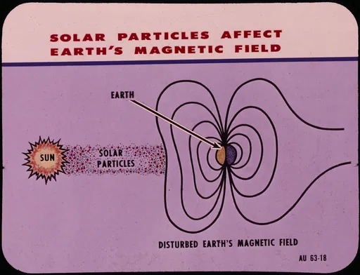
Magnetism magnetismPublic Domain Mark · chrisspurgeon · source 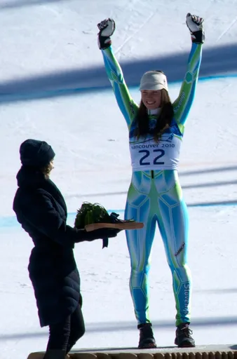
Maze mazeCC BY 2.0 · Women's_Super_G_at_Whistler_Creekside,_Tina_Maze_getting_bronze.jpg: Duncan Rawlinson derivative work: Sporti (talk) · source Meditation meditationCC0 · sashameel · source 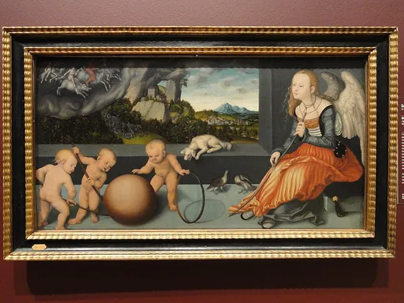
Melancholy melancholyCC0 · Lucas Cranach the Elder · source 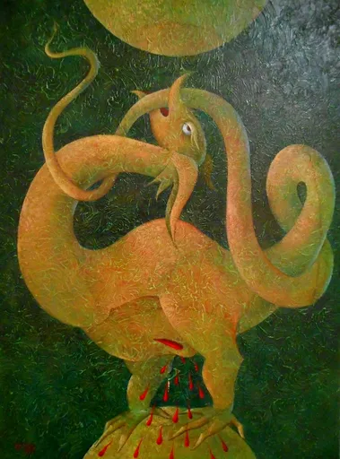
Metamorphosis metamorphosisPublic Domain Mark · Carlo Raso · source 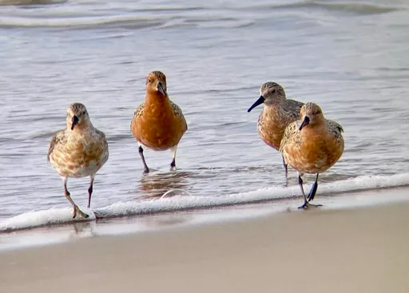
Migration migrationPublic Domain Mark · CapeHatterasNPS · source 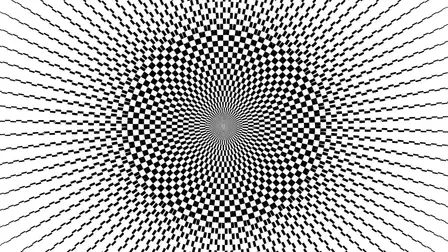
Mirage miragePublic Domain Mark · dp792 · source Momentum momentumCC0 · COPPARIS2015 · source 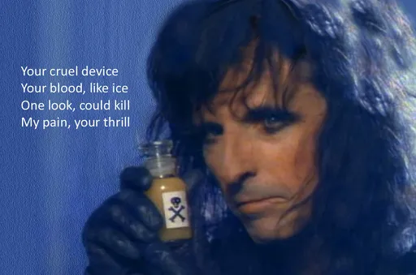
Mood swing mood-swingPublic Domain Mark · bodellia · source 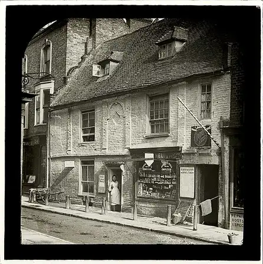
Mystery mysteryPublic Domain Mark · whatsthatpicture · source Nervousness nervousnessCC0 · Jan Vašek · source 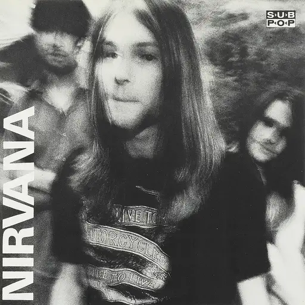
Nirvana nirvanaPublic domain · Alice Wheeler · source 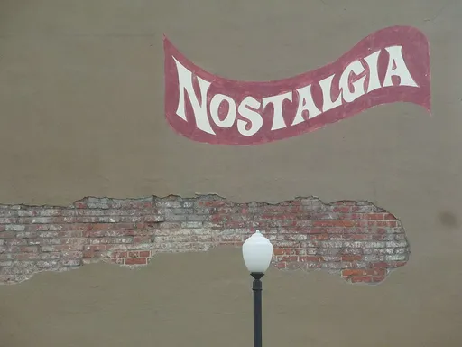
Nostalgia nostalgiaCC BY-SA 3.0 · Billy Hathorn · source 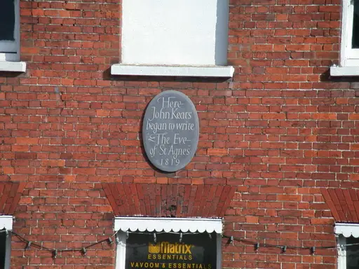
Numb fingers numb-fingersCC BY-SA 2.0 · Keith Edkins · source 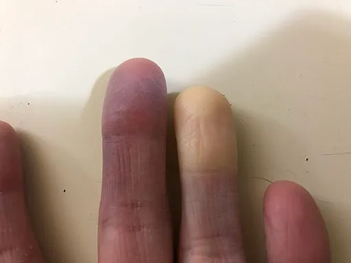
Numbness numbnessCC BY-SA 4.0 · Famartin · source word only
Obsession obsessionword only
Optimism optimismword only
Orbit orbitword only
Osmosis osmosis1 2 3 4 5 6 7 8 9 10 11 12